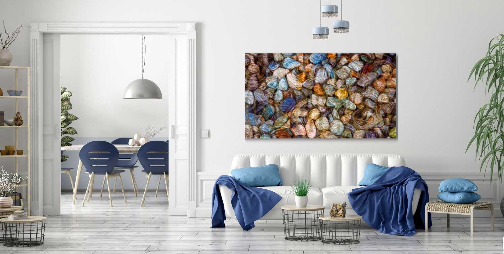

The Library · Omaste Witkowski
Digital Mixed Media Abstract Art

So what exactly is Digital Mixed Media? Many people understand that traditional mixed media is art that was created from more than one physical media type. For example, if you draw with ink and then paint over the drawing with watercolor paints and then add some highlights with colored pencil, then that is mixed media.
Digital mixed media is a type of art that is created on a computer by bringing together more than one digital art, photograph, illustration or design. These various elements are brought together in a program such as Adobe Photoshop. This software allows you to create many layers using the various elements and combine them all, with or without affects, into one final art piece.
Unique, Customizable and Easy to Coordinate
See something you like, but the color tones are just not quite right? You love the piece overall but wish it was black and white, pastel or just a bit more subdued?
No problem! Every piece of art on this page is customizable. Because these pieces were all created on a computer, we are able to make adjustments to the art and help you specifically coordinate any elements for your unique designs.
Mixed media art for every room in your home, office or rental property. There is something here for any and every design whether you are looking for paintings, abstracts, color patterns, patterns, symbols or textures. If we don’t have it, we can custom create anything you are looking for.

Macro Glass Photography Foundations
Our mixed media art work uses photography as the base media and in this case, digital photos of Handblown Glass Art. These images have a massive range of color, texture and shape that can be modified as needed. Every one of them starts as a photograph and then we use the photographic elements to create new images.
In fact, some of these mixed media pieces can have up to 40 layers in one image!
Textured Abstracts
Textured abstracts are a gallery of work that uses multiple layers of various brushes but no patterns. All of the art in this selection are pieces of work that started as photographs and then hand painted in Photoshop using digital brushes of different sizes and types. We were able to paint each layer separately and then overlay them with various layers of opacity to create the final image.
Enjoy the mystery here that shows the various layers of reality we encounter daily. A single moment is created by a lifetime of moments and in turn is part of the web of the future. Nothing is ever what it seems and sometimes even the simplest version of a moment is still incomprehensible.
The art represents life. A single photograph created from another piece of art is viewed at such a small level that it is mostly unrecognizable. Then it is covered in layers of itself. Using brushes that vary from layer to layer. Each one having a different effect on the whole. Taken together they reflect what surrounds us every day. Love, Pain, Joy, Excitement, Fear, Envy, Sadness, Vibrance and Peace.
Bring this art into your home, office or rental and the energy comes with it. Any one of these prints will invite elemental energy into your life and allow you to find what you are looking for.
Interior Designs With Textured Abstract Wall Art

Abstract Digital Paintings
Abstract Digital Paintings are photographs that have quite simply been digitally painted over, not with layers of opacity, but with layers of paint. Here we liquified the original photograph and created digital paint. We then dipped our digital brushes in the liquid paint and used it to create a new piece of art.
We are taking an abstract look at the simple complexities in life. Using an original photograph and then stripping it down into basic color elements in order to build it back up again as a new painting. This is what life does to us. Brings us into the world in an original form and then strips us down to our elements in order to build us up again as new people. Each layer it works on is separate and unique. All of them together are us.
Bring this art into your home, office or rental and the energy comes with it. Any one of these prints will invite elemental energy into your life and allow you to find what you are looking for.
Interior Designs With Abstract Digital Paintings
Abstract Healing Art
Abstract Healing Art builds on the original concept of our textured abstracts and abstract digital paintings. These images start to get more complicated that the first series (if you can imagine that!). Here we begin to frame all of the images and infuse more healing energy into the spaces.
We begin to work with patterns and boundaries. Each of the pieces focuses on a different frequency of thought, light and experience. This art connects what is physical to what is spiritual and attempts to create awareness through colors and shades of light.
These prints will work very well with bold designs for many interior design styles. They will spark conversations and cause people to stop and reflect a minute. Many will want to dive deeper into the colors and feel the emotional connection to the work that was intended by the artist.
Interior Designs With Abstract Healing Art
Find your own piece with the art adventure · Ask the gallery what fits your wall